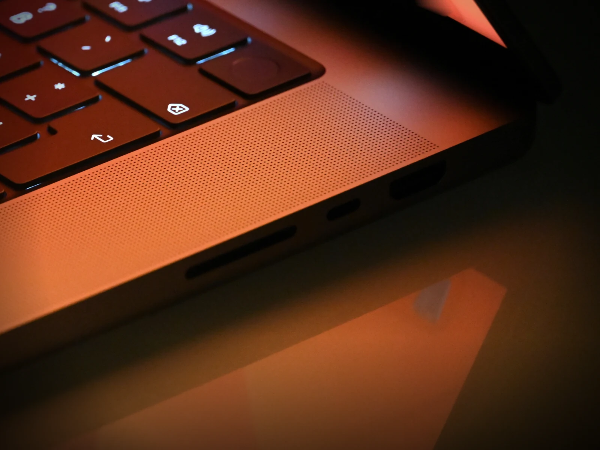
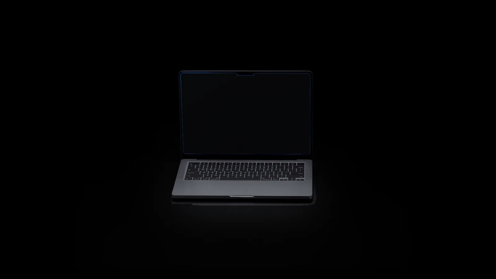
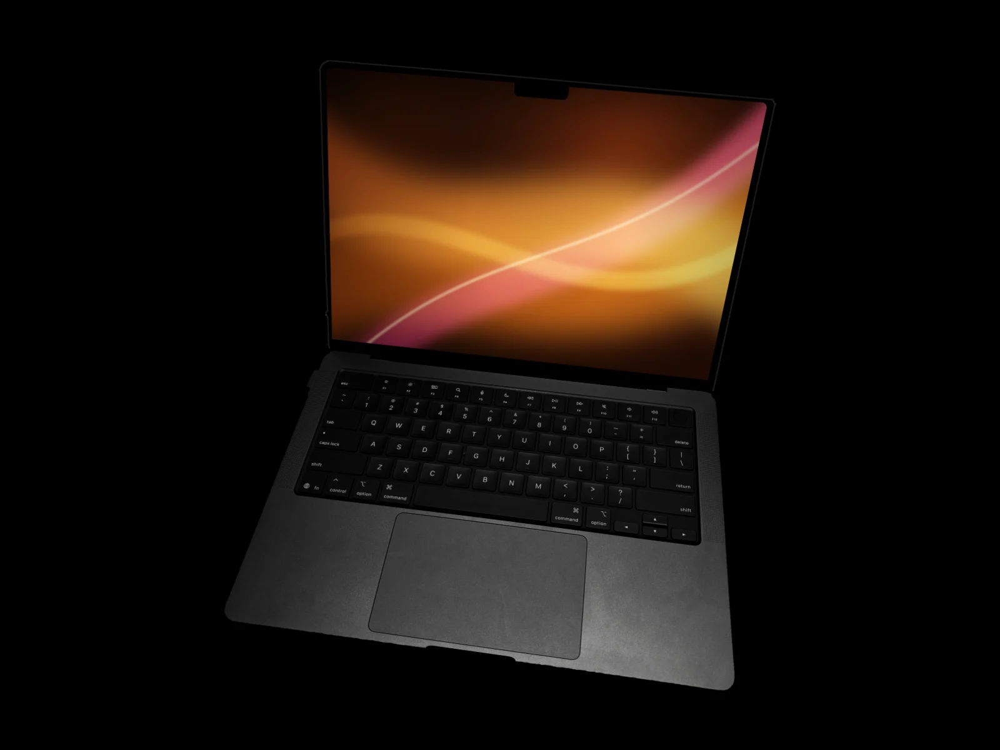
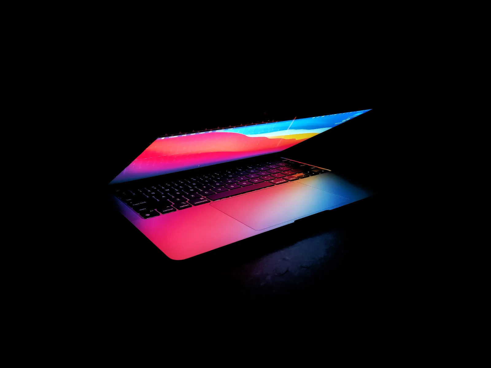
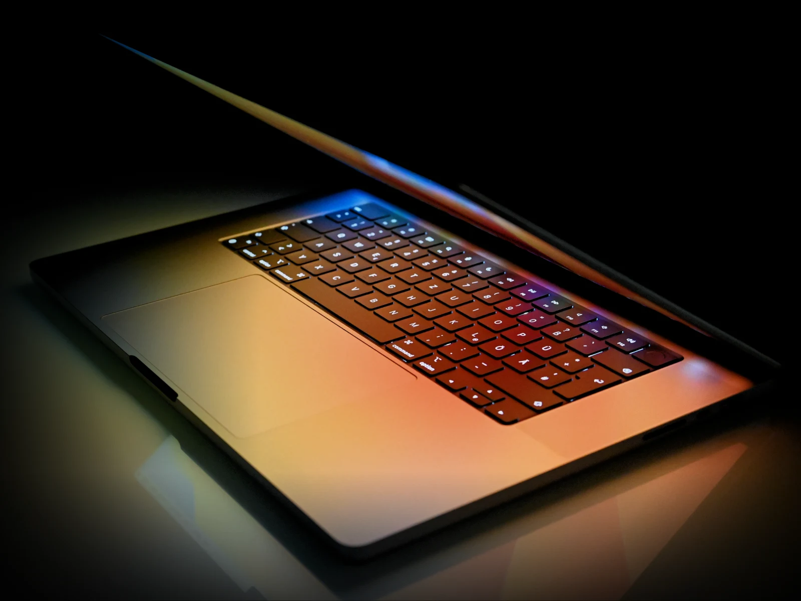
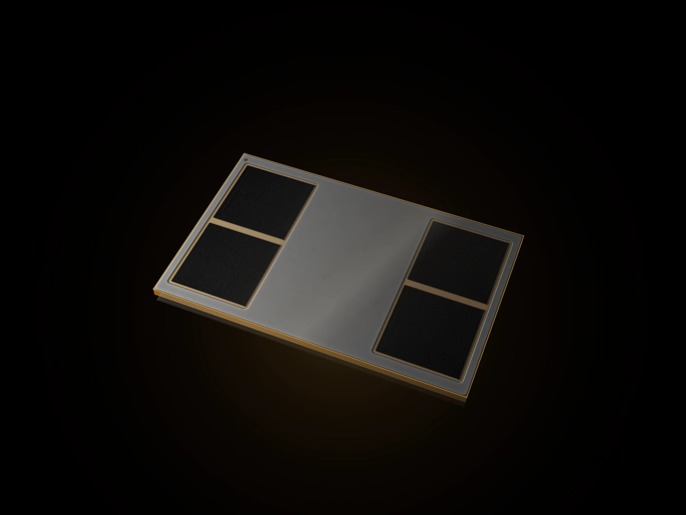
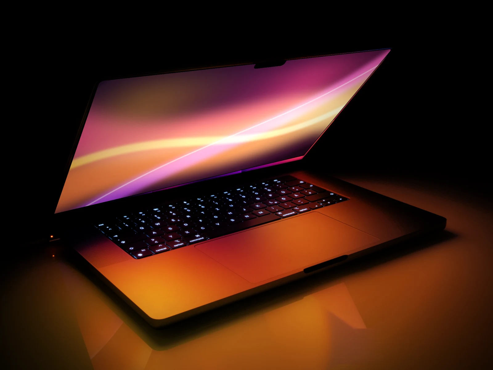
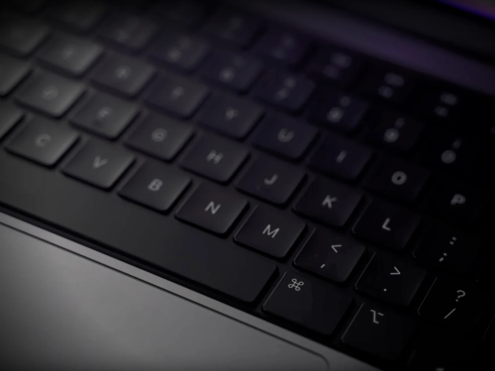

auraBook Pro
HDMI, SDXC y Thunderbolt, de serie.
El monitor, la tarjeta de la cámara y el disco externo se conectan directamente. MagSafe 3 deja libres los demás puertos mientras carga.


Gama auraBook
auraBook Pro y auraBook Air, con AURA Silicon. Potencia de estudio en un portátil que te acompaña todo el día.
Liquid Retina XDR
De brillo máximo y ProMotion a 120 Hz en los auraBook Pro.
Autonomía
De vídeo sin enchufe en el auraBook Pro 16″, la mayor autonomía en un auraBook.
Desde 1,51 kg y con AURA Silicon en los tres modelos.
Modelos / 2026
Portátiles con AURA Silicon: dos Pro con pantalla Liquid Retina XDR y el Air más grande, fino y silencioso.
Diseño / Acabados
Un teclado negro de tamaño completo, una pantalla que llega casi hasta el borde y cantos suaves que se agradecen al llevarlo bajo el brazo.


Cerrado, un auraBook ocupa menos que una carpeta de apuntes. Abierto, la pantalla se apoya en una bisagra firme que no cede ni con el portátil en las rodillas.
1,15 cm
de grosor en el auraBook Air 15″
1,55 kg
pesa el auraBook Pro 14″, con pantalla de 14,2″

auraBook Pro 16″ / AURA M5 Max
Simulación, composición en 8K y modelos de IA en local, a una escala que antes exigía una sala entera. El AURA M5 Max lo hace en un portátil, y sin despeinarse2.
Comprar auraBook Pro 16″
Hasta
18
núcleos de CPU para compilar y renderizar
Hasta
40
núcleos de GPU para gráficos, vídeo y juegos
Hasta
128 GB
de memoria unificada, compartida por CPU y GPU
IA hasta
8 veces
más rápida que con el AURA M1 Max
Pantalla / Liquid Retina XDR
Miles de zonas de luz que se encienden y se apagan por separado: el contraste de una sala de montaje, en la mesa del salón.
Hasta
1.600 nits
de brillo máximo para fotos y vídeo HDR
ProMotion a
120 Hz
el desplazamiento y los cursores, más fluidos
Hasta
16,2″
de diagonal en el auraBook Pro 16″
¿Trabajas junto a una ventana?
Elige la pantalla nanotexturizada al configurar tu auraBook Pro, por más: dispersa los reflejos sin perder contraste.
Autonomía / AURA Silicon
Hasta 24 horas de batería en el auraBook Pro 16″1. Edita, compila, presenta y reproduce durante todo el día con la eficiencia de AURA Silicon, enchufado o no: rinde igual.

Conexiones / Cámara
Y en todos los modelos, cámara Center Stage de 12 Mpx para que en cada videollamada se te vea bien y centrado.
auraBook Pro
El monitor, la tarjeta de la cámara y el disco externo se conectan directamente. MagSafe 3 deja libres los demás puertos mientras carga.

Todos los modelos
Teclas retroiluminadas de tamaño completo, fila de funciones y un trackpad amplio que responde en cualquier punto.

auraOS 27 / AURA Intelligence
Un solo ecosistema auraOS: tu auraBook trabaja junto a tu auraPhone y tu auraPad, del escritorio de casa al estudio más ambicioso.
auraOS / Un solo flujo
auraOS conecta tus dispositivos, apps y proyectos. Contesta llamadas en el portátil, copia en el auraPhone y pega en el auraBook, o amplía tu escritorio a un auraPad.
Resume, reescribe y encuentra lo que buscas en tus archivos, con la IA trabajando en el propio auraBook.
Empieza un documento en el auraPhone y termínalo en el auraBook sin pensar en archivos.
Tus datos se procesan en el auraBook siempre que es posible, y el cifrado del disco viene activado de fábrica.

Perfiles / AURA Silicon
Encuentra el auraBook que encaja con tu forma de trabajar.

Desarrollo
Contenedores, simuladores y modelos de IA en local, todo a la vez. La memoria unificada lo mantiene en marcha sin despeinarse.
Comprar auraBook Pro 14″
Fotografía
La pantalla Liquid Retina XDR muestra cada matiz y el lector SDXC vuelca la tarjeta sin adaptadores ni esperas.
Comprar auraBook Pro 14″
Vídeo 8K
Montajes multicámara, efectos en tiempo real y exportaciones que terminan antes de que te levantes de la silla.
Comprar auraBook Pro 16″
Estudios
Ligero, sin ventilador y con batería para todo el día: del aula a la biblioteca sin buscar un enchufe.
Comprar auraBook Air 15″
Música
Cientos de pistas e instrumentos virtuales en tiempo real. Tan silencioso que solo se oye la música.
Comprar auraBook Pro 14″Medio ambiente
Carcasa de aluminio reciclado, un embalaje de fibra sin plásticos y un chip que consume tan poco que el cargador descansa más que tú. Y cuando quieras renovarlo, AURA Trade In le da una segunda vida.
Comparativa técnica
AURA Store